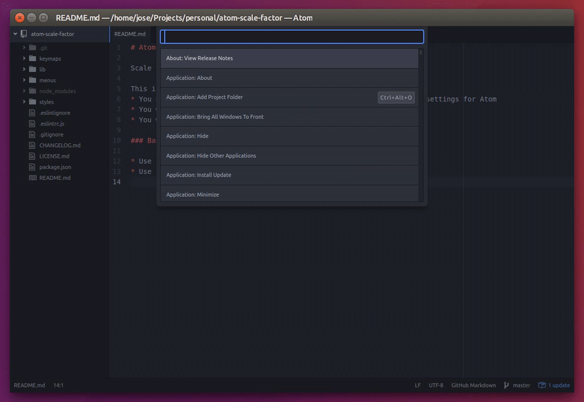

Atom Scale factor
Scale your Atom
This is useful when:
- You have a HiDPI display and your OS doesn't auto detect the display settings for Atom
- You want to show your code in presentations
- You want to change the scale quickly
Basic Usage
- Use
Ctrl+Alt+pand enter your new scale factor ie. 1.5 - Use
Ctrl+Alt+0to reset the scale factor to 1
